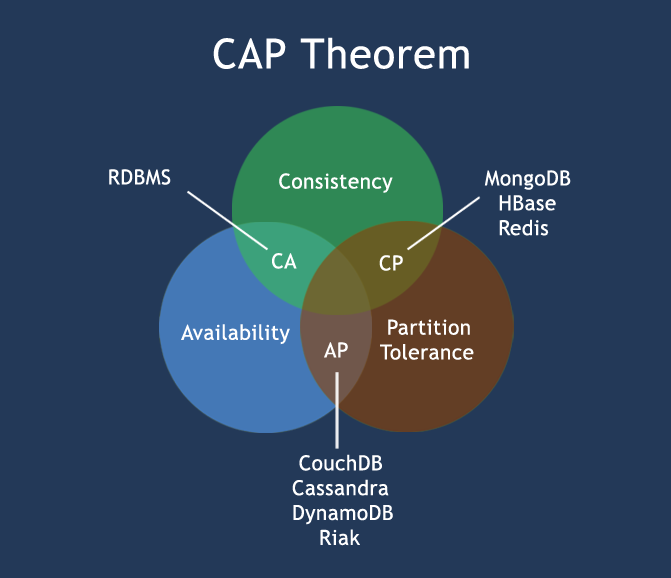

NoSQL简介及对比NoSQL和RDBMS
简单介绍NoSQL、对比RDBMS与NoSQL、传统关系型数据库面临的问题 与Redis、MongoDB、Cassandra三款NoSQL数据库
先介绍基础性概念
关系型数据库 的 ACID 规则
关系型数据库遵循ACID规则
关系数据库管理系统（RDMBS）
事务在英文中是transaction，和现实世界中的交易很类似，它有如下四个特性：
A (Atomicity) 原子性
原子性很容易理解，也就是说事务里的所有操作要么全部做完，要么都不做，事务成功的条件是事务里的所有操作都成功，只要有一个操作失败，整个事务就失败，需要回滚。
比如银行转账，从A账户转100元至B账户，分为两个步骤：1）从A账户取100元；2）存入100元至B账户。这两步要么一起完成，要么一起不完成，如果只完成第一步，第二步失败，钱会莫名其妙少了100元。C (Consistency) 一致性
一致性也比较容易理解，也就是说数据库要一直处于一致的状态，事务的运行不会改变数据库原本的一致性约束。
例如现有完整性约束a+b=10，如果一个事务改变了a，那么必须得改变b，使得事务结束后依然满足a+b=10，否则事务失败。I (Isolation) 独立性
所谓的独立性是指并发的事务之间不会互相影响，如果一个事务要访问的数据正在被另外一个事务修改，只要另外一个事务未提交，它所访问的数据就不受未提交事务的影响。
比如现在有个交易是从A账户转100元至B账户，在这个交易还未完成的情况下，如果此时B查询自己的账户，是看不到新增加的100元的。D (Durability) 持久性
持久性是指一旦事务提交后，它所做的修改将会永久的保存在数据库上，即使出现宕机也不会丢失。
BASE
BASE：Basically Available, Soft-state, Eventually Consistent。 由 Eric Brewer 定义。
CAP理论的核心是：一个分布式系统不可能同时很好的满足一致性，可用性和分区容错性这三个需求，最多只能同时较好的满足两个。
BASE是NoSQL数据库通常对可用性及一致性的弱要求原则:
- Basically Availble --基本可用
- Soft-state --软状态/柔性事务。 "Soft state" 可以理解为"无连接"的, 而 "Hard state" 是"面向连接"的
- Eventual Consistency --最终一致性 最终一致性， 也是是 ACID 的最终目的。
CAP定理
在计算机科学中, CAP定理（CAP theorem）, 又被称作 布鲁尔定理（Brewer's theorem）, 它指出对于一个分布式计算系统来说，不可能同时满足以下三点:
- 一致性(Consistency) (所有节点在同一时间具有相同的数据)
- 可用性(Availability) (保证每个请求不管成功或者失败都有响应)
- 分隔容忍(Partition tolerance) (系统中任意信息的丢失或失败不会影响系统的继续运作)
CAP理论的核心是：一个分布式系统不可能同时很好的满足一致性，可用性和分区容错性这三个需求，最多只能同时较好的满足两个。
因此，根据 CAP 原理将 NoSQL 数据库分成了满足 CA 原则、满足 CP 原则和满足 AP 原则三 大类：
CA - 单点集群，满足一致性，可用性的系统，通常在可扩展性上不太强大。
CP - 满足一致性，分区容忍性的系统，通常性能不是特别高。
AP - 满足可用性，分区容忍性的系统，通常可能对一致性要求低一些。

分布式
分布式系统（distributed system）由多台计算机和通信的软件组件通过计算机网络连接（本地网络或广域网）组成。
分布式系统是建立在网络之上的软件系统。正是因为软件的特性，所以分布式系统具有高度的内聚性和透明性。
因此，网络和分布式系统之间的区别更多的在于高层软件（特别是操作系统），而不是硬件。
分布式系统可以应用在不同的平台上如：Pc、工作站、局域网和广域网上等。
分布式计算的优点
- 可靠性（容错）：
分布式计算系统中的一个重要的优点是可靠性。一台服务器的系统崩溃并不影响到其余的服务器。 - 可扩展性：
在分布式计算系统可以根据需要增加更多的机器。 - 资源共享：
共享数据是必不可少的应用，如银行，预订系统。 - 灵活性：
由于该系统是非常灵活的，它很容易安装，实施和调试新的服务。 - 更快的速度：
分布式计算系统可以有多台计算机的计算能力，使得它比其他系统有更快的处理速度。 - 开放系统：
由于它是开放的系统，本地或者远程都可以访问到该服务。 - 更高的性能：
相较于集中式计算机网络集群可以提供更高的性能（及更好的性价比）。
分布式计算的缺点
- 故障排除：
故障排除和诊断问题。 - 软件：
更少的软件支持是分布式计算系统的主要缺点。 - 网络：
网络基础设施的问题，包括：传输问题，高负载，信息丢失等。 - 安全性：
开放系统的特性让分布式计算系统存在着数据的安全性和共享的风险等问题。
ACID vs BASE
| ACID | BASE |
|---|---|
| 原子性(Atomicity) | 基本可用(Basically Available) |
| 一致性(Consistency) | 软状态/柔性事务(Soft state) |
| 隔离性(Isolation) | 最终一致性(Eventual consistency) |
| 持久性 (Durable) |
RDBMS vs NoSQL
RDBMS
- 高度组织化结构化数据
- 结构化查询语言（SQL） (SQL)
- 数据和关系都存储在单独的表中。
- 数据操纵语言(DML)，数据定义语言(DDL)
- 严格的一致性
- 基础事务
NoSQL
- 代表着不仅仅是SQL
- 没有声明性查询语言
- 没有预定义的模式
- 键 - 值对存储，列存储，文档存储，图形数据库
- 最终一致性，而非ACID属性
- 非结构化和不可预知的数据
- CAP定理
- 高性能，高可用性和可伸缩性
NoSQL简介
NoSQL，指的是非关系型的数据库。NoSQL有时也称作Not Only SQL的缩写，是对不同于传统的关系型数据库的数据库管理系统的统称。
NoSQL用于超大规模数据的存储。（例如谷歌或Facebook每天为他们的用户收集万亿比特的数据）。这些类型的数据存储不需要固定的模式，无需多余操作就可以横向扩展。
NoSQL简史
NoSQL一词最早出现于1998年，是Carlo Strozzi开发的一个轻量、开源、不提供SQL功能的关系数据库。
2009年，Last.fm的Johan Oskarsson发起了一次关于分布式开源数据库的讨论[2]，来自Rackspace的Eric Evans再次提出了NoSQL的概念，这时的NoSQL主要指非关系型、分布式、不提供ACID的数据库设计模式。
2009年在亚特兰大举行的"no:sql(east)"讨论会是一个里程碑，其口号是"select fun, profit from real_world where relational=false;"。因此，对NoSQL最普遍的解释是"非关联型的"，强调Key-Value Stores和文档数据库的优点，而不是单纯的反对RDBMS。
NoSQL数据库的四大分类:
键值(Key-Value)存储数据库
这一类数据库主要会使用到一个哈希表，这个表中有一个特定的键和一个指针指向特定的数据。Key/value模型对于IT系统来说的优势在于简单、易部署。但是如果DBA只对部分值进行查询或更新的时候，Key/value就显得效率低下了。
举例如：Tokyo Cabinet/Tyrant, Redis, Voldemort, Oracle BDB.
列存储数据库
这部分数据库通常是用来应对分布式存储的海量数据。键仍然存在，但是它们的特点是指向了多个列。这些列是由列家族来安排的。
如：Cassandra, HBase, Riak.
文档型数据库
文档型数据库的灵感是来自于Lotus Notes办公软件的，而且它同第一种键值存储相类似。该类型的数据模型是版本化的文档，半结构化的文档以特定的格式存储，比如JSON。文档型数据库可 以看作是键值数据库的升级版，允许之间嵌套键值。而且文档型数据库比键值数据库的查询效率更高。
如：CouchDB, MongoDb. 国内也有文档型数据库SequoiaDB，已经开源。
图形(Graph)数据库
图形结构的数据库同其他行列以及刚性结构的SQL数据库不同，它是使用灵活的图形模型，并且能够扩展到多个服务器上。NoSQL数据库没有标准的查询语言(SQL)，因此进行数据库查询需要制定数据模型。
许多NoSQL数据库都有REST式的数据接口或者查询API。如：Neo4J, InfoGrid, Infinite Graph.
NoSQL数据库的四大分类表格分析
| 分类 | Examples举例 | 典型应用场景 | 数据模型 | 优点 | 缺点 |
|---|---|---|---|---|---|
| 键值（key-value） | Tokyo Cabinet/Tyrant, Redis, Voldemort, Oracle BDB | 内容缓存，主要用于处理大量数据的高访问负载，也用于一些日志系统等等。 | Key 指向 Value 的键值对，通常用hash table来实现 | 查找速度快 | 数据无结构化，通常只被当作字符串或者二进制数据 |
| 列存储数据库 | Cassandra, HBase, Riak | 分布式的文件系统 | 以列簇式存储，将同一列数据存在一起 | 查找速度快，可扩展性强，更容易进行分布式扩展 | 功能相对局限 |
| 文档型数据库 | CouchDB, MongoDb | Web应用（与Key-Value类似，Value是结构化的，不同的是数据库能够了解Value的内容） | Key-Value对应的键值对，Value为结构化数据 | 数据结构要求不严格，表结构可变，不需要像关系型数据库一样需要预先定义表结构 | 查询性能不高，而且缺乏统一的查询语法。 |
| 图形(Graph)数据库 | Neo4J, InfoGrid, Infinite Graph | 社交网络，推荐系统等。专注于构建关系图谱 | 图结构 | 利用图结构相关算法。比如最短路径寻址，N度关系查找等 | 很多时候需要对整个图做计算才能得出需要的信息，而且这种结构不太好做分布式的集群方案。 |
适用场景
NoSQL数据库在以下的这几种情况下比较适用：
- 数据模型比较简单；
- 需要灵活性更强的IT系统；
- 对数据库性能要求较高；
- 不需要高度的数据一致性；
- 对于给定key，比较容易映射复杂值的环境。
传统关系型数据库面临的问题
需要很高的实时插入性能：在高并发读写环境下，每秒上万次读请求勉强可以支撑，但是在每秒上万次写请求之下，硬盘I/O将无法承受。
需要海量数据存储能力的同时还需要非常快的查询检索速度：在一个表中存储数以亿计的记录后，使用SQL查询的效率是极为低下的。
需要将数据存储无缝扩展到整个集群：数据库的横向扩展比较困难，往往需要停机维护和数据迁移，不能像Web服务器那样简单地通过增加服务器数量来减轻负载。
针对高并发读写、海量存储以及可扩展性三个方向，有不同的NoSQL解决方案，这里对每个方向分别简要介绍了Redis、MongoDB、Cassandra三款NoSQL数据库。
高并发读写性能 - Redis
Redis是基于Key-Value类型的内存数据库，数据都存放在内存中，定期通过异步同步将数据flush到硬盘上，内存操作避免了较慢的硬盘I/O，测试数据每秒可以处理10万个读写请求，是目前最快的Key-Value数据库之一。
Redis还支持存储List、Set结构并原生支持对它们的一些操作。
Redis最大的缺点是依赖物理内存，不适合存储大量数据。针对这个问题，Redis 2.0开发了虚拟内存的特性，将不经常使用的数据存放到硬盘上。
Redis没有采用操作系统的虚拟内存，主要是考虑到页中可能包含多个对象，而想写入硬盘的只有那些不常用的，以页为单位进行交换很难把握，另外Redis自己的虚拟内存可以在写入硬盘时去掉对象一些不必要的属性，官方说法是对象可以比内存中的大小小10倍。
海量存储 - MongoDB
MongoDB是目前比较流行的面向文档的数据库，数据库的交互采用和JSON语法非常类似的BSON格式。
MongoDB支持存放比较复杂的对象类型，查询语法和面向对象语言的很像，也支持索引功能。官方文档的测试中当数据量达到50GB以上时，访问速度是MySQL的10倍以上，大约每秒可以处理0.5万~1.5万次的读写请求。
MongoDB自带GridFS支持分布式的海量存储。目前很多站点都采用或者准备往MongoDB迁移。
可扩展性 - Cassandra
Cassandra是Facebook开源的产品，包括Facebook和Twitter都在用。它是基于分布式的一个数据库。写的时候写请求从客户端到达一个随机节点，先写日志再将写内容复制到若干个节点，保证当某些节点损坏时仍然可以获取数据。读请求到达随机节点后会被路由到某个节点上获取数据。
高扩展性体现在需要扩展数据库时增加节点就可以。Cassandra的读写性能并不是最优秀的，但是分布式的可扩展性弥补了这个缺陷。